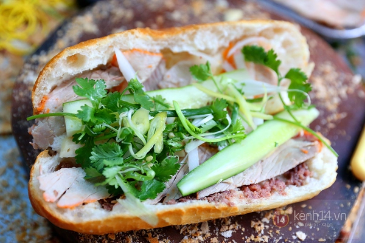

The king - Banh mi

--Description--
Banh mi is my no.1 favorite Vietnamese food. It has a great flavor and a crunchy feeling from the toasted bread. The tasty meat combined with pickled and fresh veggies plus the homemade sauce will give you a wonderful experience. Moreover, banh mi is cheap, hence it is the most popular food in Vietnam. A masterpiece of food at an unbelievable price!
Contents
- Vietnamese Bread
- Flour 300g
- Dry yeast 5g
- Sugar 15g
- Salt 5g
- Water 200ml
- Vitamin C powder 0.1g
- Vinegar 5g
- Tools
- Meat
- Pate
- Ham
- Vietnames Pork Ham
- Pork belly
- Meat floss
- Vegies
- Goat horn pepper
- Cilantro
- Pickled white radish
- Pickled carrot
- Sliced cucumber
- Vietnamese homemade sauce
Steps
- Cut a line by the side of the bread
- Put the pate inside
- Put the meat inside
- Put veggies inside
- Apply the homemade sauce
- You're ready to go!